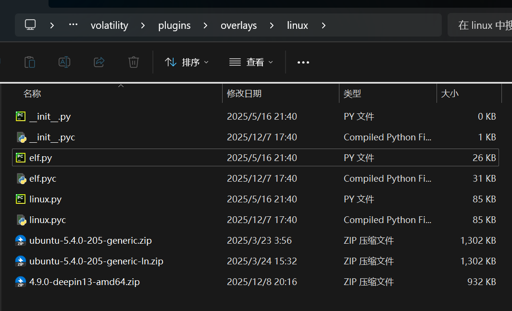

checking build system type... x86_64-pc-linux-gnu checking host system type... x86_64-pc-linux-gnu checking for gcc... gcc checking whether the C compiler works... yes checking for C compiler default output file name... a.out checking for suffix of executables... checking whether we are cross compiling... no checking for suffix of object files... o checking whether the compiler supports GNU C... yes checking whether gcc accepts -g... yes checking for gcc option to enable C11 features... none needed checking whether gcc understands -c and -o together... yes checking for ar... ar checking the archiver (ar) interface... ar checking for a BSD-compatible install... /usr/bin/install -c checking whether build environment is sane... yes checking for a race-free mkdir -p... /bin/mkdir -p checking for gawk... gawk checking whether make sets $(MAKE)... yes checking whether make supports the include directive... yes (GNU style) checking whether make supports nested variables... yes checking dependency style of gcc... gcc3 checking whether make supports nested variables... (cached) yes checking how to print strings... printf checking for a sed that does not truncate output... /bin/sed checking for grep that handles long lines and -e... /bin/grep checking for egrep... /bin/grep -E checking for fgrep... /bin/grep -F checking for ld used by gcc... /usr/bin/ld checking if the linker (/usr/bin/ld) is GNU ld... yes checking for BSD- or MS-compatible name lister (nm)... /usr/bin/nm -B checking the name lister (/usr/bin/nm -B) interface... BSD nm checking whether ln -s works... yes checking the maximum length of command line arguments... 1572864 checking how to convert x86_64-pc-linux-gnu file names to x86_64-pc-linux-gnu format... func_convert_file_noop checking how to convert x86_64-pc-linux-gnu file names to toolchain format... func_convert_file_noop checking for /usr/bin/ld option to reload object files... -r checking for objdump... objdump checking how to recognize dependent libraries... pass_all checking for dlltool... no checking how to associate runtime and link libraries... printf %s\n checking for archiver @FILE support... @ checking for strip... strip checking for ranlib... ranlib checking command to parse /usr/bin/nm -B output from gcc object... ok checking for sysroot... no checking for a working dd... /bin/dd checking how to truncate binary pipes... /bin/dd bs=4096 count=1 ../configure: line 7994: /usr/bin/file: No such file or directory checking for mt... mt checking if mt is a manifest tool... no checking for stdio.h... yes checking for stdlib.h... yes checking for string.h... yes checking for inttypes.h... yes checking for stdint.h... yes checking for strings.h... yes checking for sys/stat.h... yes checking for sys/types.h... yes checking for unistd.h... yes checking for dlfcn.h... yes checking for objdir... .libs checking if gcc supports -fno-rtti -fno-exceptions... no checking for gcc option to produce PIC... -fPIC -DPIC checking if gcc PIC flag -fPIC -DPIC works... yes checking if gcc static flag -static works... yes checking if gcc supports -c -o file.o... yes checking if gcc supports -c -o file.o... (cached) yes checking whether the gcc linker (/usr/bin/ld) supports shared libraries... yes checking dynamic linker characteristics... GNU/Linux ld.so checking how to hardcode library paths into programs... immediate checking whether stripping libraries is possible... yes checking if libtool supports shared libraries... yes checking whether to build shared libraries... no checking whether to build static libraries... yes checking for gcc... (cached) gcc checking whether the compiler supports GNU C... (cached) yes checking whether gcc accepts -g... (cached) yes checking for gcc option to enable C11 features... (cached) none needed checking whether gcc understands -c and -o together... (cached) yes checking for g++... no checking for c++... no checking for gpp... no checking for aCC... no checking for CC... no checking for cxx... no checking for cc++... no checking for cl.exe... no checking for FCC... no checking for KCC... no checking for RCC... no checking for xlC_r... no checking for xlC... no checking for clang++... no checking whether the compiler supports GNU C++... no checking whether g++ accepts -g... no checking for g++ option to enable C++11 features... none needed checking dependency style of g++... none checking whether gcc and cc understand -c and -o together... yes checking for pkg-config... /usr/bin/pkg-config checking pkg-config is at least version 0.9.0... yes checking for ZLIB... yes checking for ZSTD... no checking for unistd.h... (cached) yes checking for sys/types.h... (cached) yes checking for malloc.h... yes checking for stdint.h... (cached) yes checking for inttypes.h... (cached) yes checking for stddef.h... yes checking for fcntl.h... yes checking for zstd.h... no checking for uintptr_t... yes checking for intptr_t... yes checking for uint32_t... yes checking for libelf.h... no checking for libelf/libelf.h... no checking for elf.h... yes configure: "no libelf headers, so no libelf" checking whether byte ordering is bigendian... no checking whether the C++ compiler supports ... no checking whether the C++ compiler supports ... no checking whether the C compiler supports ... yes checking whether "unused" attribute is available... yes checking whether sanitize options are used... no checking for size_t... yes checking for working alloca.h... yes checking for alloca... yes checking for library containing elf64_getehdr... no checking for library containing elf64_getshdr... no dadebug zlib yesyes dadebug zstd no no checking that generated files are newer than configure... done configure: creating ./config.status config.status: creating Makefile config.status: creating src/lib/libdwarf/Makefile config.status: creating src/lib/libdwarfp/Makefile config.status: creating src/bin/dwarfdump/Makefile config.status: creating src/bin/dwarfgen/Makefile config.status: creating src/bin/dwarfexample/Makefile config.status: creating src/bin/gennames/Makefile config.status: creating src/bin/tag_attr/Makefile config.status: creating src/bin/tag_tree/Makefile config.status: creating src/bin/attr_form/Makefile config.status: creating src/bin/buildopstab/Makefile config.status: creating src/bin/builduritable/Makefile config.status: creating test/Makefile config.status: creating doc/Makefile config.status: creating libdwarf.pc config.status: creating libdwarfp.pc config.status: creating config.h config.status: executing depfiles commands config.status: executing libtool commands
shared library.......: no static library.......: yes
zlib support.........: yes zstd support.........: no sanitize support.....: no documentation........: no BuildOS-BigEndian....: no
libdwarf.............: always elf64_getehdr......: no elf64_getshdr......: no libelf.............: no dwarfdump............: always dwarfgen.............: no dwarfexample.........: no
Installation...........: make install (as root if needed, with 'su' or 'sudo') prefix...............: /usr/local
make all-recursive make[1]: Entering directory '/root/libdwarf-0.6.0/build' Making all in src/lib/libdwarf make[2]: Entering directory '/root/libdwarf-0.6.0/build/src/lib/libdwarf' CC libdwarf_la-dwarf_abbrev.lo CC libdwarf_la-dwarf_alloc.lo CC libdwarf_la-dwarf_arange.lo CC libdwarf_la-dwarf_fill_in_attr_form.lo CC libdwarf_la-dwarf_dsc.lo CC libdwarf_la-dwarf_debuglink.lo CC libdwarf_la-dwarf_error.lo CC libdwarf_la-dwarf_crc.lo CC libdwarf_la-dwarf_elf_rel_detector.lo CC libdwarf_la-dwarf_debug_sup.lo CC libdwarf_la-dwarf_debugnames.lo CC libdwarf_la-dwarf_elf_load_headers.lo CC libdwarf_la-dwarf_crc32.lo CC libdwarf_la-dwarf_die_deliv.lo CC libdwarf_la-dwarf_debugaddr.lo CC libdwarf_la-dwarf_elfread.lo CC libdwarf_la-dwarf_find_sigref.lo CC libdwarf_la-dwarf_fission_to_cu.lo CC libdwarf_la-dwarf_form.lo CC libdwarf_la-dwarf_form_class_names.lo CC libdwarf_la-dwarf_frame.lo CC libdwarf_la-dwarf_frame2.lo CC libdwarf_la-dwarf_gdbindex.lo CC libdwarf_la-dwarf_generic_init.lo CC libdwarf_la-dwarf_global.lo CC libdwarf_la-dwarf_gnu_index.lo CC libdwarf_la-dwarf_groups.lo CC libdwarf_la-dwarf_harmless.lo CC libdwarf_la-dwarf_init_finish.lo CC libdwarf_la-dwarf_leb.lo CC libdwarf_la-dwarf_line.lo CC libdwarf_la-dwarf_loc.lo CC libdwarf_la-dwarf_locationop_read.lo CC libdwarf_la-dwarf_loclists.lo CC libdwarf_la-dwarf_machoread.lo CC libdwarf_la-dwarf_macro.lo CC libdwarf_la-dwarf_macro5.lo CC libdwarf_la-dwarf_memcpy_swap.lo CC libdwarf_la-dwarf_names.lo CC libdwarf_la-dwarf_object_detector.lo CC libdwarf_la-dwarf_object_read_common.lo CC libdwarf_la-dwarf_peread.lo CC libdwarf_la-dwarf_print_lines.lo CC libdwarf_la-dwarf_query.lo CC libdwarf_la-dwarf_safe_strcpy.lo CC libdwarf_la-dwarf_ranges.lo CC libdwarf_la-dwarf_str_offsets.lo CC libdwarf_la-dwarf_rnglists.lo CC libdwarf_la-dwarf_string.lo CC libdwarf_la-dwarf_stringsection.lo CC libdwarf_la-dwarf_tied.lo CC libdwarf_la-dwarf_tsearchhash.lo CC libdwarf_la-dwarf_util.lo CC libdwarf_la-dwarf_xu_index.lo CCLD libdwarf.la make[2]: Leaving directory '/root/libdwarf-0.6.0/build/src/lib/libdwarf' Making all in src/bin/dwarfdump make[2]: Entering directory '/root/libdwarf-0.6.0/build/src/bin/dwarfdump' CC dwarfdump-dd_command_options.o CC dwarfdump-dwarfdump.o CC dwarfdump-dd_attr_form.o CC dwarfdump-dd_addrmap.o CC dwarfdump-dd_canonical_append.o CC dwarfdump-dd_common.o CC dwarfdump-dd_safe_strcpy.o CC dwarfdump-dd_getopt.o CC dwarfdump-dd_glflags.o CC dwarfdump-dd_checkutil.o CC dwarfdump-dd_tsearchbal.o CC dwarfdump-dd_compiler_info.o CC dwarfdump-dd_esb.o CC dwarfdump-dd_regex.o CC dwarfdump-dd_helpertree.o CC dwarfdump-dd_dwconf.o CC dwarfdump-dd_macrocheck.o CC dwarfdump-dd_naming.o CC dwarfdump-dd_makename.o CC dwarfdump-dd_opscounttab.o CC dwarfdump-print_abbrevs.o CC dwarfdump-print_aranges.o CC dwarfdump-print_debugfission.o CC dwarfdump-print_die.o CC dwarfdump-print_debug_gnu.o CC dwarfdump-print_debug_addr.o CC dwarfdump-print_debug_names.o CC dwarfdump-print_debug_sup.o CC dwarfdump-print_frames.o CC dwarfdump-print_gdbindex.o CC dwarfdump-print_hipc_lopc_attr.o CC dwarfdump-print_lines.o CC dwarfdump-print_llex_codes.o CC dwarfdump-print_origloclist_codes.o CC dwarfdump-print_loclists.o CC dwarfdump-print_loclists_codes.o CC dwarfdump-print_macinfo.o CC dwarfdump-print_macro.o CC dwarfdump-print_pubnames.o CC dwarfdump-print_rnglists.o CC dwarfdump-print_section_groups.o CC dwarfdump-print_ranges.o CC dwarfdump-print_sections.o CC dwarfdump-print_str_offsets.o CC dwarfdump-print_strings.o CC dwarfdump-print_tag_attributes_usage.o CC dwarfdump-dd_sanitized.o CC dwarfdump-dd_strstrnocase.o CC dwarfdump-dd_true_section_name.o CC dwarfdump-dd_uri.o CCLD dwarfdump make[2]: Leaving directory '/root/libdwarf-0.6.0/build/src/bin/dwarfdump' Making all intest make[2]: Entering directory '/root/libdwarf-0.6.0/build/test' make[2]: Nothing to be donefor'all'. make[2]: Leaving directory '/root/libdwarf-0.6.0/build/test' Making all in doc make[2]: Entering directory '/root/libdwarf-0.6.0/build/doc' make[2]: Nothing to be donefor'all'. make[2]: Leaving directory '/root/libdwarf-0.6.0/build/doc' Making all in src/bin/gennames make[2]: Entering directory '/root/libdwarf-0.6.0/build/src/bin/gennames' CC gennames-gennames.o CC ../../../src/bin/dwarfdump/gennames-dd_getopt.o CC ../../../src/lib/libdwarf/gennames-dwarf_safe_strcpy.o CCLD gennames make[2]: Leaving directory '/root/libdwarf-0.6.0/build/src/bin/gennames' Making all in src/bin/tag_tree make[2]: Entering directory '/root/libdwarf-0.6.0/build/src/bin/tag_tree' CC ../../../src/bin/dwarfdump/tagtree-dd_common.o CC ../../../src/bin/dwarfdump/tagtree-dd_esb.o CC ../../../src/bin/dwarfdump/tagtree-dd_makename.o CC tagtree-tag_tree.o CC ../../../src/bin/dwarfdump/tagtree-dd_getopt.o CC ../../../src/bin/dwarfdump/tagtree-dd_tsearchbal.o CC ../../../src/bin/dwarfdump/tagtree-dd_glflags.o CC ../../../src/bin/dwarfdump/tagtree-dd_naming.o CC ../../../src/bin/dwarfdump/tagtree-dd_sanitized.o CC ../../../src/bin/dwarfdump/tagtree-dd_safe_strcpy.o CC ../../../src/bin/tag_tree/tagtree-tag_common.o CCLD tagtree make[2]: Leaving directory '/root/libdwarf-0.6.0/build/src/bin/tag_tree' Making all in src/bin/tag_attr make[2]: Entering directory '/root/libdwarf-0.6.0/build/src/bin/tag_attr' CC ../../../src/bin/tag_tree/tagattr-tag_common.o CC ../../../src/bin/dwarfdump/tagattr-dd_safe_strcpy.o CC ../../../src/bin/dwarfdump/tagattr-dd_makename.o CC ../../../src/bin/dwarfdump/tagattr-dd_sanitized.o CC ../../../src/bin/dwarfdump/tagattr-dd_common.o CC tagattr-tag_attr.o CC ../../../src/bin/dwarfdump/tagattr-dd_esb.o CC ../../../src/bin/dwarfdump/tagattr-dd_glflags.o CC ../../../src/bin/dwarfdump/tagattr-dd_tsearchbal.o CC ../../../src/bin/dwarfdump/tagattr-dd_getopt.o CC ../../../src/bin/dwarfdump/tagattr-dd_naming.o CCLD tagattr make[2]: Leaving directory '/root/libdwarf-0.6.0/build/src/bin/tag_attr' Making all in src/bin/attr_form make[2]: Entering directory '/root/libdwarf-0.6.0/build/src/bin/attr_form' CC attrform-attr_form_build.o CC ../../../src/bin/dwarfdump/attrform-dd_common.o CC ../../../src/bin/dwarfdump/attrform-dd_esb.o CC ../../../src/bin/dwarfdump/attrform-dd_tsearchbal.o CC ../../../src/bin/dwarfdump/attrform-dd_glflags.o CC ../../../src/bin/dwarfdump/attrform-dd_attr_form.o CC ../../../src/bin/dwarfdump/attrform-dd_naming.o CC ../../../src/bin/dwarfdump/attrform-dd_makename.o CC ../../../src/bin/dwarfdump/attrform-dd_getopt.o CC ../../../src/bin/dwarfdump/attrform-dd_safe_strcpy.o CC ../../../src/bin/dwarfdump/attrform-dd_sanitized.o CC ../../../src/bin/tag_tree/attrform-tag_common.o CCLD attrform make[2]: Leaving directory '/root/libdwarf-0.6.0/build/src/bin/attr_form' Making all in src/bin/buildopstab make[2]: Entering directory '/root/libdwarf-0.6.0/build/src/bin/buildopstab' CC buildopstab-buildopscounttab.o CCLD buildopstab make[2]: Leaving directory '/root/libdwarf-0.6.0/build/src/bin/buildopstab' Making all in src/bin/builduritable make[2]: Entering directory '/root/libdwarf-0.6.0/build/src/bin/builduritable' CC builduritable-uritablebuild.o CCLD builduritable make[2]: Leaving directory '/root/libdwarf-0.6.0/build/src/bin/builduritable' make[2]: Entering directory '/root/libdwarf-0.6.0/build' make[2]: Leaving directory '/root/libdwarf-0.6.0/build' make[1]: Leaving directory '/root/libdwarf-0.6.0/build' Making install in src/lib/libdwarf make[1]: Entering directory '/root/libdwarf-0.6.0/build/src/lib/libdwarf' make[2]: Entering directory '/root/libdwarf-0.6.0/build/src/lib/libdwarf' /bin/mkdir -p '/usr/local/lib' /bin/bash ../../../libtool --mode=install /usr/bin/install -c libdwarf.la '/usr/local/lib' libtool: install: /usr/bin/install -c .libs/libdwarf.lai /usr/local/lib/libdwarf.la libtool: install: /usr/bin/install -c .libs/libdwarf.a /usr/local/lib/libdwarf.a libtool: install: chmod 644 /usr/local/lib/libdwarf.a libtool: install: ranlib /usr/local/lib/libdwarf.a libtool: finish: PATH="/usr/local/sbin:/usr/local/bin:/usr/sbin:/usr/bin:/sbin:/bin:/sbin" ldconfig -n /usr/local/lib ---------------------------------------------------------------------- Libraries have been installed in: /usr/local/lib
If you ever happen to want to link against installed libraries in a given directory, LIBDIR, you must either use libtool, and specify the full pathname of the library, or use the '-LLIBDIR' flag during linking and do at least one of the following: - add LIBDIR to the 'LD_LIBRARY_PATH' environment variable during execution - add LIBDIR to the 'LD_RUN_PATH' environment variable during linking - use the '-Wl,-rpath -Wl,LIBDIR' linker flag - have your system administrator add LIBDIR to '/etc/ld.so.conf'
See any operating system documentation about shared libraries for more information, such as the ld(1) and ld.so(8) manual pages. ---------------------------------------------------------------------- /bin/mkdir -p '/usr/local/include/libdwarf-0' /usr/bin/install -c -m 644 ../../../../src/lib/libdwarf/dwarf.h ../../../../src/lib/libdwarf/libdwarf.h '/usr/local/include/libdwarf-0' make[2]: Leaving directory '/root/libdwarf-0.6.0/build/src/lib/libdwarf' make[1]: Leaving directory '/root/libdwarf-0.6.0/build/src/lib/libdwarf' Making install in src/bin/dwarfdump make[1]: Entering directory '/root/libdwarf-0.6.0/build/src/bin/dwarfdump' make[2]: Entering directory '/root/libdwarf-0.6.0/build/src/bin/dwarfdump' /bin/mkdir -p '/usr/local/bin' /bin/bash ../../../libtool --mode=install /usr/bin/install -c dwarfdump '/usr/local/bin' libtool: install: /usr/bin/install -c dwarfdump /usr/local/bin/dwarfdump /bin/mkdir -p '/usr/local/share/dwarfdump' /usr/bin/install -c -m 644 ../../../../src/bin/dwarfdump/dwarfdump.conf '/usr/local/share/dwarfdump' make[2]: Leaving directory '/root/libdwarf-0.6.0/build/src/bin/dwarfdump' make[1]: Leaving directory '/root/libdwarf-0.6.0/build/src/bin/dwarfdump' Making install intest make[1]: Entering directory '/root/libdwarf-0.6.0/build/test' make[2]: Entering directory '/root/libdwarf-0.6.0/build/test' make[2]: Nothing to be donefor'install-exec-am'. make[2]: Nothing to be donefor'install-data-am'. make[2]: Leaving directory '/root/libdwarf-0.6.0/build/test' make[1]: Leaving directory '/root/libdwarf-0.6.0/build/test' Making install in doc make[1]: Entering directory '/root/libdwarf-0.6.0/build/doc' make[2]: Entering directory '/root/libdwarf-0.6.0/build/doc' make[2]: Nothing to be donefor'install-exec-am'. /bin/mkdir -p '/usr/local/share/man/man1' /usr/bin/install -c -m 644 ../../doc/dwarfdump.1 '/usr/local/share/man/man1' make[2]: Leaving directory '/root/libdwarf-0.6.0/build/doc' make[1]: Leaving directory '/root/libdwarf-0.6.0/build/doc' Making install in src/bin/gennames make[1]: Entering directory '/root/libdwarf-0.6.0/build/src/bin/gennames' make[2]: Entering directory '/root/libdwarf-0.6.0/build/src/bin/gennames' make[2]: Nothing to be donefor'install-exec-am'. make[2]: Nothing to be donefor'install-data-am'. make[2]: Leaving directory '/root/libdwarf-0.6.0/build/src/bin/gennames' make[1]: Leaving directory '/root/libdwarf-0.6.0/build/src/bin/gennames' Making install in src/bin/tag_tree make[1]: Entering directory '/root/libdwarf-0.6.0/build/src/bin/tag_tree' make[2]: Entering directory '/root/libdwarf-0.6.0/build/src/bin/tag_tree' make[2]: Nothing to be donefor'install-exec-am'. make[2]: Nothing to be donefor'install-data-am'. make[2]: Leaving directory '/root/libdwarf-0.6.0/build/src/bin/tag_tree' make[1]: Leaving directory '/root/libdwarf-0.6.0/build/src/bin/tag_tree' Making install in src/bin/tag_attr make[1]: Entering directory '/root/libdwarf-0.6.0/build/src/bin/tag_attr' make[2]: Entering directory '/root/libdwarf-0.6.0/build/src/bin/tag_attr' make[2]: Nothing to be donefor'install-exec-am'. make[2]: Nothing to be donefor'install-data-am'. make[2]: Leaving directory '/root/libdwarf-0.6.0/build/src/bin/tag_attr' make[1]: Leaving directory '/root/libdwarf-0.6.0/build/src/bin/tag_attr' Making install in src/bin/attr_form make[1]: Entering directory '/root/libdwarf-0.6.0/build/src/bin/attr_form' make[2]: Entering directory '/root/libdwarf-0.6.0/build/src/bin/attr_form' make[2]: Nothing to be donefor'install-exec-am'. make[2]: Nothing to be donefor'install-data-am'. make[2]: Leaving directory '/root/libdwarf-0.6.0/build/src/bin/attr_form' make[1]: Leaving directory '/root/libdwarf-0.6.0/build/src/bin/attr_form' Making install in src/bin/buildopstab make[1]: Entering directory '/root/libdwarf-0.6.0/build/src/bin/buildopstab' make[2]: Entering directory '/root/libdwarf-0.6.0/build/src/bin/buildopstab' make[2]: Nothing to be donefor'install-exec-am'. make[2]: Nothing to be donefor'install-data-am'. make[2]: Leaving directory '/root/libdwarf-0.6.0/build/src/bin/buildopstab' make[1]: Leaving directory '/root/libdwarf-0.6.0/build/src/bin/buildopstab' Making install in src/bin/builduritable make[1]: Entering directory '/root/libdwarf-0.6.0/build/src/bin/builduritable' make[2]: Entering directory '/root/libdwarf-0.6.0/build/src/bin/builduritable' make[2]: Nothing to be donefor'install-exec-am'. make[2]: Nothing to be donefor'install-data-am'. make[2]: Leaving directory '/root/libdwarf-0.6.0/build/src/bin/builduritable' make[1]: Leaving directory '/root/libdwarf-0.6.0/build/src/bin/builduritable' make[1]: Entering directory '/root/libdwarf-0.6.0/build' make[2]: Entering directory '/root/libdwarf-0.6.0/build' make[2]: Nothing to be donefor'install-exec-am'. /bin/mkdir -p '/usr/local/lib/pkgconfig' /usr/bin/install -c -m 644 libdwarf.pc '/usr/local/lib/pkgconfig' make[2]: Leaving directory '/root/libdwarf-0.6.0/build' make[1]: Leaving directory '/root/libdwarf-0.6.0/build'
root@test-PC:~# cd linux/ root@test-PC:~/linux# ls kcore Makefile Makefile.enterprise module.c root@test-PC:~/linux# make make -C //lib/modules/4.9.0-deepin13-amd64/build CONFIG_DEBUG_INFO=y M="/root/linux" modules make[1]: Entering directory '/usr/src/linux-headers-4.9.0-deepin13-amd64' CC [M] /root/linux/module.o Building modules, stage 2. MODPOST 1 modules CC /root/linux/module.mod.o LD [M] /root/linux/module.ko make[1]: Leaving directory '/usr/src/linux-headers-4.9.0-deepin13-amd64' dwarfdump -di module.ko > module.dwarf make -C //lib/modules/4.9.0-deepin13-amd64/build M="/root/linux" clean make[1]: Entering directory '/usr/src/linux-headers-4.9.0-deepin13-amd64' CLEAN /root/linux/.tmp_versions CLEAN /root/linux/Module.symvers make[1]: Leaving directory '/usr/src/linux-headers-4.9.0-deepin13-amd64' root@test-PC:~/linux# ls kcore Makefile Makefile.enterprise module.c module.dwarf root@test-PC:~/linux# cp /boot/System.map-4.9.0-deepin13-amd64 . root@test-PC:~/linux# zip `uname -r`.zip System.map-4.9.0-deepin13-amd64 module.dwarf adding: System.map-4.9.0-deepin13-amd64 (deflated 79%) adding: module.dwarf (deflated 91%) root@test-PC:~/linux#

然后使用–info命令查看是否存在新添加的profile
1 2 3 4 5 6 7 8 9 10
python2 vol.py --info Volatility Foundation Volatility Framework 2.6.1
Profiles -------- Linux4_9_0-deepin13-amd64x64 - A Profile for Linux 4.9.0-deepin13-amd64 x64 Linuxubuntu-5_4_0-205-generic-lnx64 - A Profile for Linux ubuntu-5.4.0-205-generic-ln x64 Linuxubuntu-5_4_0-205-genericx64 - A Profile for Linux ubuntu-5.4.0-205-generic x64 VistaSP0x64 - A Profile for Windows Vista SP0 x64